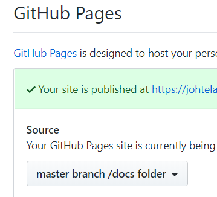

LiTScript
- Literate
- Interactive
- TypeScript

LiTScript is a documentation generation tool that draws inspiration from literate programming. It extracts documentation from TypeScript projects and produces feature-rich web sites. Its goal is to make creating and maintaining project documentation as effortless as possible.
This web site is generated from the source of the LiTScript project. Check the source in GitHub to see how the documentation is incorporated into the code. The animation below illustrates how the tool works.
See also Parzec for an example of a simpler project using LiTScript.
LiTScript can extract documentation from any kind of source file: TS, JS,
CSS, LeSS, SCSS, etc. Just write your documentation in markdown inside
JSDoc comments /** ... */ and it will be processed by LiTScript.
/**
* ## Options
*
* The available settings are defined in the `Options` interface.
* Options specified in JSON and command line are case-insensitive.
* Keys are converted to lowercase before comparing them.
*/
export interface Options {
/**
* ### Base Directory
*
* This setting specifies the project root folder. LiTScript
* expects to find the [configuration files](#configuration-files)
* there.
*/
baseDir: string
...
If you prefer to keep your documentation separate from code, you can store it in regular markdown files. You can insert snippets of code inside your markdown using regions.
 Unlike simpler documentation tools LiTScript does not just parse documentation
from comments. It uses the TypeScript Compiler API to provide syntax
highlighting, type information, and symbol links in outputted code blocks.
Hover your mouse over the code snippet below to see these in action.
Unlike simpler documentation tools LiTScript does not just parse documentation
from comments. It uses the TypeScript Compiler API to provide syntax
highlighting, type information, and symbol links in outputted code blocks.
Hover your mouse over the code snippet below to see these in action.
export async function main(args: string[]) {
try {
cfg.readOptionsFromFile()
cfg.parseCommandLine(args, cfg.getOptions())
await run()
}
catch (e) {
log.error(e instanceof Error ? e.message : e)
if (e instanceof cfg.CommandLineError) {
console.log("USAGE: lits <options>\n\nOPTIONS:")
cfg.printCommandLineOptions(cfg.getOptions())
}
process.exit()
}
}
Your documentation need not to be just static. LiTScript makes it easy to run your TypeScript code in the browser. You can insert dynamic parts called visualizers anywhere in the documentation. They are run automatically when the page loads, and they can add new elements to the DOM. The animation you see above is implemented as a visualizer.
 Deploying multiple TypeScript modules and style sheets to a web site can be a
complicated task. LiTScript uses Webpack internally to compile all the
required JS and CSS files into few optimized bundles without any
additional configuration. This makes generated web sites fast and easy to
deploy.
Deploying multiple TypeScript modules and style sheets to a web site can be a
complicated task. LiTScript uses Webpack internally to compile all the
required JS and CSS files into few optimized bundles without any
additional configuration. This makes generated web sites fast and easy to
deploy.
 To make your feedback loop really short, start LiTScript in watch mode.
It runs in the background and regenerates the documentation as soon as any
source file changes. Combining watch mode with a local web server with
automatic reloading makes the whole development process more rewarding and
enjoyable.
To make your feedback loop really short, start LiTScript in watch mode.
It runs in the background and regenerates the documentation as soon as any
source file changes. Combining watch mode with a local web server with
automatic reloading makes the whole development process more rewarding and
enjoyable.
If you are using VSCode as your editor, you can install syntax highlighting of LiTScript comments.
 You can customize many aspects of the documentation look & feel with the
theming support. Colors, fonts, margins, spacings, layout and more can be
changed easily with simple settings. As a bonus, there are four different
syntax highlighting schemes to choose from.
You can customize many aspects of the documentation look & feel with the
theming support. Colors, fonts, margins, spacings, layout and more can be
changed easily with simple settings. As a bonus, there are four different
syntax highlighting schemes to choose from.
One annoying limitation of both markdown and HTML is that mathematical equations are not supported out-of-the-box. LiTScript enables math support by utilizing the library. With that you can write equations such as this:
LiTScript helps understanding the project structure by maintaining table of contents and dependency graph. These are JSON files which contain your documentation structure and module dependency information. They are displayed in the documentation making navigating the code easier, and helping to see the "big picture".
There are numerous other features that you can discover by browsing the documentation.
You can install LiTScript from npm as a global tool.
> npm install --global litscript
This will add a new command line tool called lits.
You can scaffold an existing project to use LiTScript by cding to the
project directory and then running command:
> lits init
LiTScript will ask a series of questions about your project and documentation
settings and create a litsconfig.json file based on them. If it finds a
.vscode directory under your project folder, it can add references to JSON
schemas used by LiTScript into your settings.json file.
Additionally, you might want to set configuration properties in
litsconfig.json that automatically update table of contents and exclude
files/folders in the project directory. Below are example settings.
{
"updateToc": true,
"exclude": [
".git",
"node_modules",
"src/tests/**"
]
}
You can run LiTScript either manually by executing command
> lits
or automatically each time a source file changes using
> lits --watch
If you opted to add scripts in package.json then you can also run LiTScript
with npm, or from VS Code menu.
> npm run lits
or
> npm run lits-watch

Another good practice is to output the documentation to the docs folder under
your project folder. If your project lives in GitHub, you can publish your
documentation simply by choosing master branch/docs folder as the source for
your GitHub Pages site. You can find this option under project settings in
GitHub.
Feedback and contributions are welcome. Register an issue in GitHub, if you found a bug or have a feature request.